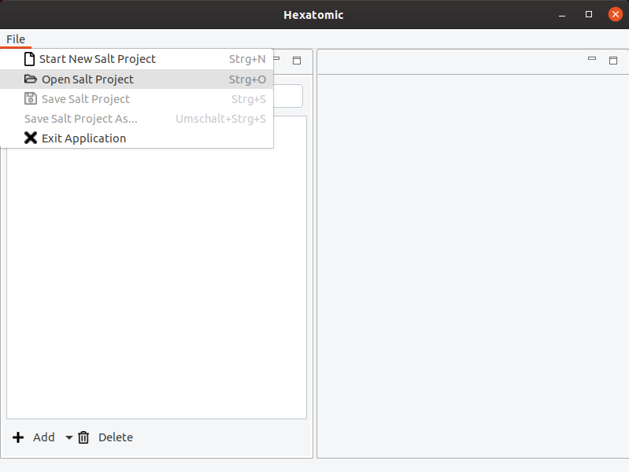

Working with projects
Hexatomic works on a single Salt project at any one time.
A project consists of a directory containing a project file (saltProject.salt) and a number of sub-directories containing the Salt document files.
To open a project in Hexatomic, click on File in the main menu and select the option Open Salt Project. A new file dialog window will come up. Choose the folder containing the project file you want to open, and open it.

After opening a Salt project, you can select Save Salt Project, which will save the project as Salt XML files in the structure explained at the beginning of this section into the same folder that they have been loaded from. Alternatively, you can select Save Salt Project As... to select a different location to save the files to. You can see the currently loaded Salt project path in the Window title. If there are unsaved changes in any document or in the corpus structure, a * will be appended to the title.

Saving the project will always save all documents, not only the openend ones. If you close an editor, the changes are not lost as long as you save the project afterwards.
To start a new and empty project in the same application window, choose Start New Salt Project.
If an action would discard unsaved changes, you are always given the choice to cancel it.